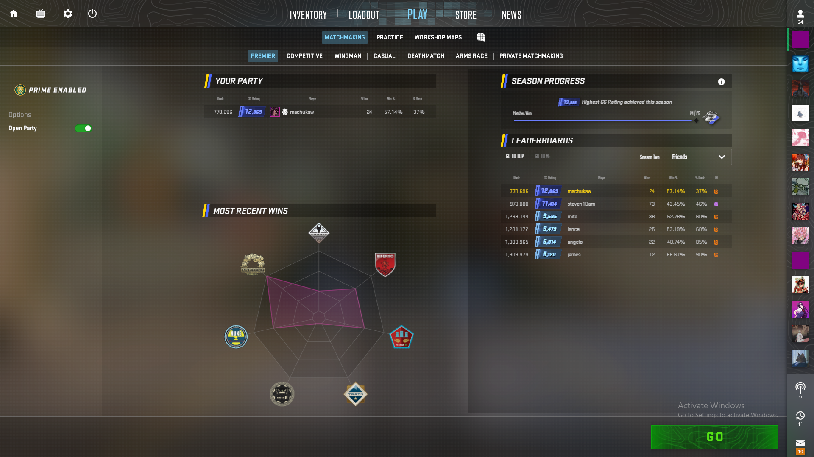

My coaching philosophy centers on a positive growth mindset, empowering players to understand core game mechanics, developing adaptable strategies, how to stay positive in any negative situation. I believe in personalized training plans and a supportive learning environment
2024 Peaked Diamond 3 (Season 0) | 2025 Current Diamond 3 (Season 1.5) More Stats
The game is similar to Overwatch 2, it has the game mechanics, the counter pickings whilst in game the have the advantages, but it has the team up plays for specific characters to stragegize and win the game
VALORANT
2024 Peaked Ascendant 3 (E8 A1) | 2025 Current no rank (V25) More Stats
I played since its release. Episode 1, act 1 but I started the competitive grind when I got a pc upgrade, I quickly ranked up in the ladder from E2 A3: Bronze E3, A1: Gold 3, E3 A2: Platinum 3. E5 A2: Diamond 3 to E8 A1 Ascendant 3. It was hard queuing on solo queue and that’s how I really got my game sense and to coaching other players.
Counter Strike 2

2024 Peaked 10k (Season 1) | 2025 Current 12k (Season 2) More Stats
I had a history with the game the same as VALORANT, I can guide you with the callouts of the maps, the lineups, and some good strategies